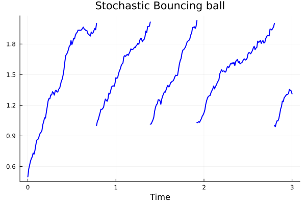

A Stochastic Example
A stochastic system contains the data $(f, g, h, Δ; δ)$
\[ \begin{cases} dx = f(x,t)dt + g(x,t)dW, & h(x) \ne 0, \\ x^+ = \Delta(x), & h(x) = 0 \end{cases}\]
Notice that $g$ must be given as a matrix.
\[ \begin{cases} dx = -(x-3)dt + 0.2 dW, & x < 2 \\ x^+ = x-1, & x = 2 \end{cases}\]
import HybridDynamics as HD
import Plots as plt
using LaTeXStrings
f_st(x, t) = -(x .-3.)
g_st(x, t) = [0.2;;]
h_st(x) = x[1]-2
Δ_st(x) = x .- 1.0
sysST = HD.StochasticSystem(f_st, g_st, h_st, Δ_st)
probST = HD.prob(sysST, [0.5], (0.0, 3.0))
solST = HD.solve(probST)HybridDynamics.StochasticSol{Vector{Float64}, Vector{Vector{Float64}}, Vector{Vector{Float64}}, prob{StochasticSystem{typeof(Main.f_st), HybridDynamics.var"#133#134"{typeof(Main.g_st)}, typeof(Main.h_st), HybridDynamics.var"#131#132"{typeof(Main.h_st)}, typeof(Main.Δ_st)}, Vector{Float64}, Tuple{Float64, Float64}}, Vector{Float64}, Vector{Int64}}([0.0, 0.01, 0.02, 0.03, 0.04, 0.05, 0.060000000000000005, 0.07, 0.08, 0.09 … 2.9199999999999817, 2.9299999999999815, 2.9399999999999813, 2.949999999999981, 2.959999999999981, 2.9699999999999807, 2.9799999999999804, 2.9899999999999802, 2.99999999999998, 3.0], [[0.5], [0.5755916473009061], [0.6141272855747137], [0.6529998301966445], [0.6784590726825166], [0.6957478206544274], [0.7320646141853097], [0.7205123041793481], [0.7554804491759239], [0.8095668668121272] … [1.2841276092907556], [1.2961637971332054], [1.3078745323184282], [1.3061260295357726], [1.3156760200172113], [1.3572166050744576], [1.3468033738330716], [1.3409118943582943], [1.3115914627879492], [1.3115914473125108]], Vector{Float64}[], prob{StochasticSystem{typeof(Main.f_st), HybridDynamics.var"#133#134"{typeof(Main.g_st)}, typeof(Main.h_st), HybridDynamics.var"#131#132"{typeof(Main.h_st)}, typeof(Main.Δ_st)}, Vector{Float64}, Tuple{Float64, Float64}}(StochasticSystem{typeof(Main.f_st), HybridDynamics.var"#133#134"{typeof(Main.g_st)}, typeof(Main.h_st), HybridDynamics.var"#131#132"{typeof(Main.h_st)}, typeof(Main.Δ_st)}(Main.f_st, HybridDynamics.var"#133#134"{typeof(Main.g_st)}(Main.g_st), Main.h_st, Main.Δ_st, HybridDynamics.var"#131#132"{typeof(Main.h_st)}(Main.h_st), 0), [0.5], (0.0, 3.0)), [0.7800000000000005, 1.390000000000001, 1.9200000000000015, 2.7999999999999843], [80, 142, 196, 285])ts, ss = HD.split_jumps(solST)
plt.plot(ts, getindex.(ss, 1), label="", lw=2, lc=:blue)
plt.plot!(title = "Stochastic Bouncing ball", xlabel = "Time", grid = true)